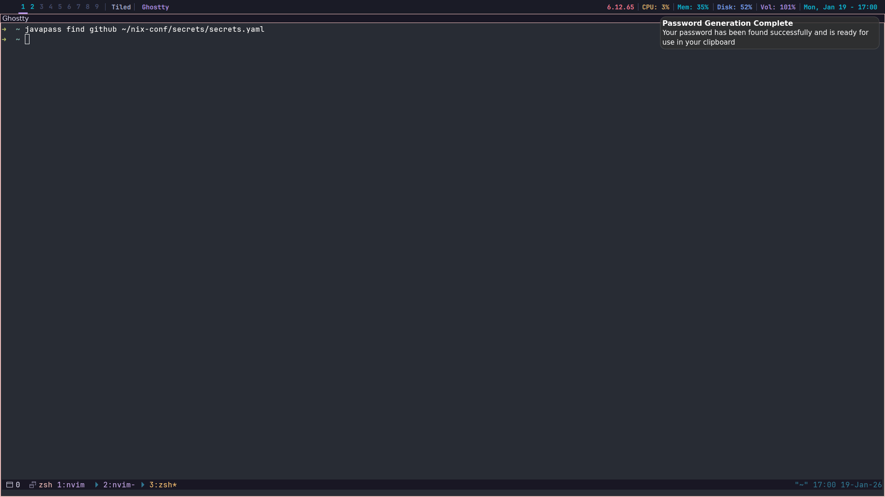

Lucas Clarke
High School Student - Sydney, Australia
Javapass Application
After coming back from an interstate holiday a few days ago, I wanted a new programming project that, when completed, would improve how I use my comptuer.
This project ended up being a password generation and management tool.
Javapass when given the “generate” flag will generate a password of 20 characters long, selecting any upper or lowercase letter, any number or any symbol for each character.
This password will then be copied straight into the users clipboard using java’s getRuntime.exec function to run the wl-copy command so that it is ready for use, a notification will also be provided so the user knows when the password generation is completed.
Along with the “generate” command, the “find” command can also be used with Javapass.
The find argument integrates with the sops password management tool to obtain the password for a specified service, for example javapass find github.
However, there is one final argument that must be passed to allow for the find command to work correctly, and that is the location of the secrets.yaml file that stores your passwords
using sops (and this must contain an absolute path). The structure of the secrets.yaml file must follow the structure:
service-name:
username/email/id/etc:
password:
This may be improved in the future to allow for other structures however this is the current implementation.
When the javapass find command is executed, the password that has been requested will be copied directly into the user’s clipboard and a notification will also be issued.
Relevent error messages are also provided if the user forgets an argument, provides an incorrect argument or provides a service that cannot be found in their secrets.yaml file.
After the creation of this tool, I can now query passwords faster than manually reading through my secrets.yaml file, which is getting quite long, and I am now able to create new passwords quickly and simply for any new service that may require one.
19.1.26 - 04:51 PM AEST

Homepage